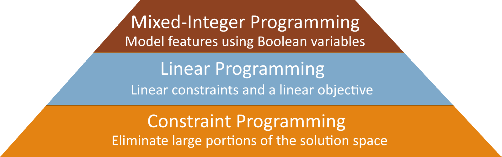
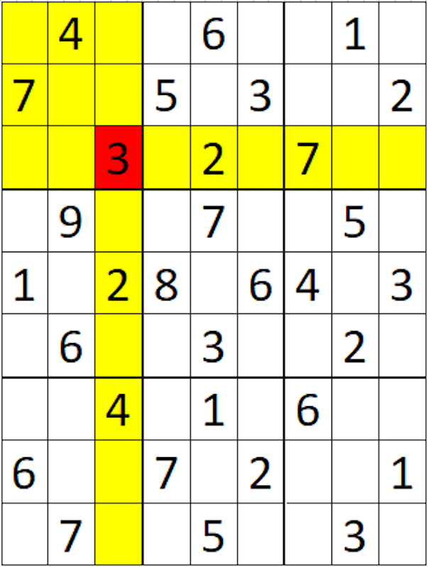
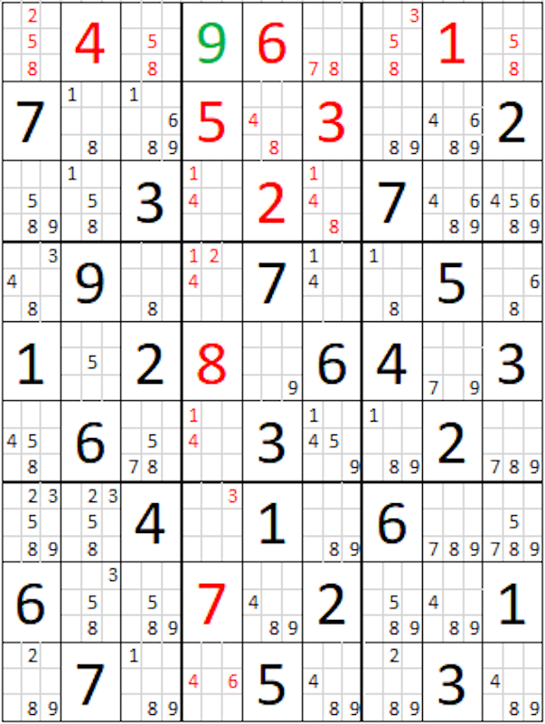
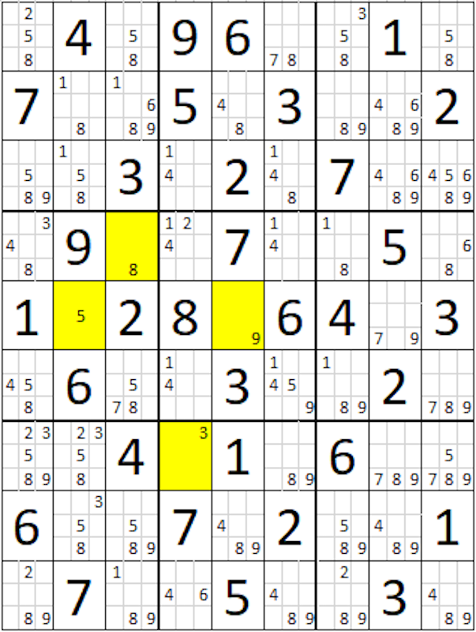
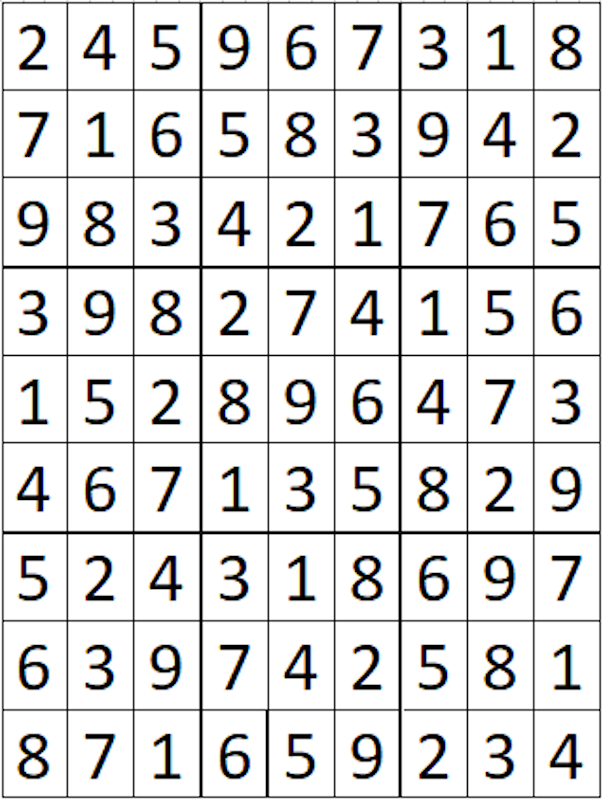
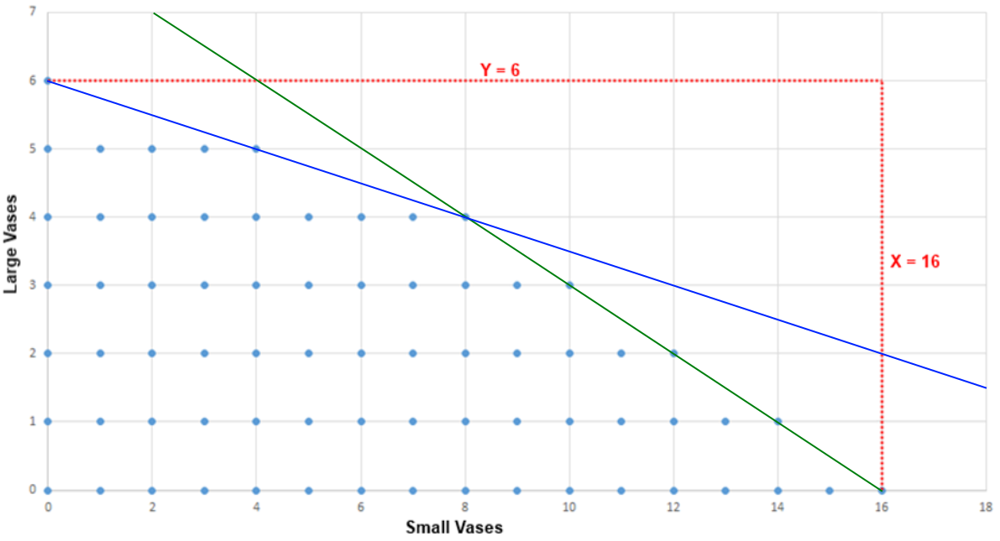
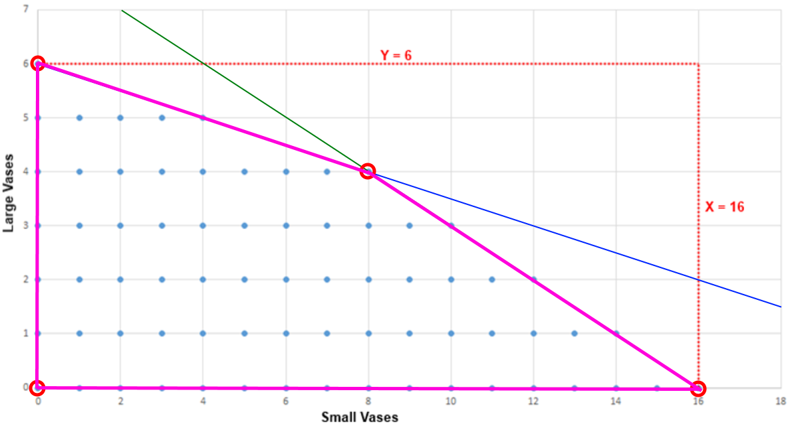
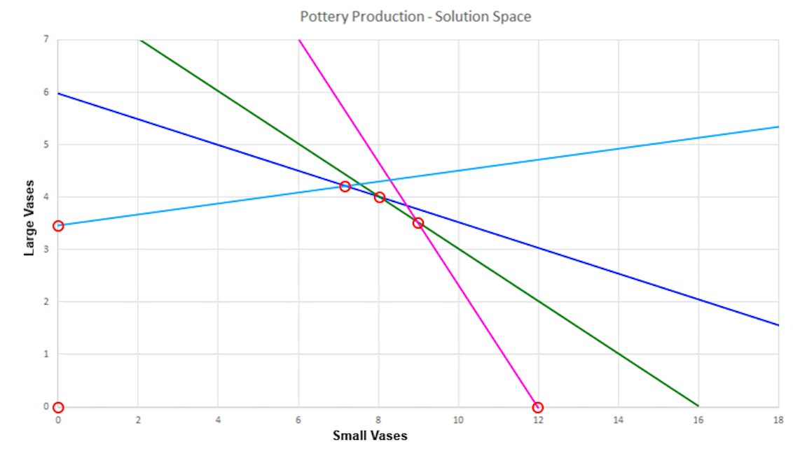
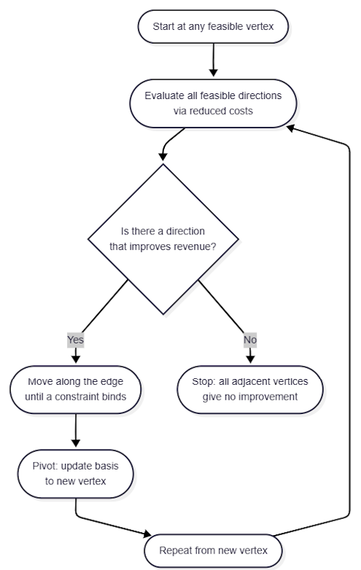
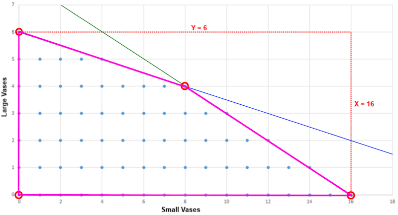

Building AI Solutionswith Google OR-ToolsBarry S. StahlPrincipal Engineer - AZNerds.net@bsstahl@cognitiveinheritance.comhttps://CognitiveInheritance.com |

|
Favorite Physicists & Mathematicians
Favorite Physicists
Other notables: Stephen Hawking, Edwin Hubble, Leonard Susskind, Christiaan Huygens |
Favorite Mathematicians
Other notables: Blaise Pascal, Daphne Koller, Grady Booch, Evelyn Berezin, Pascal Van Hentenryck |
Fediverse Supporter
|

|
Some OSS Projects I Run
- Liquid Victor : Media tracking and aggregation [used to assemble this presentation]
- Prehensile Pony-Tail : A static site generator built in c#
- TestHelperExtensions : A set of extension methods helpful when building unit tests
- Conference Scheduler : A conference schedule optimizer
- IntentBot : A microservices framework for creating conversational bots on top of Bot Framework
- LiquidNun : Library of abstractions and implementations for loosely-coupled applications
- Toastmasters Agenda : A c# library and website for generating agenda's for Toastmasters meetings
- ProtoBuf Data Mapper : A c# library for mapping and transforming ProtoBuf messages
http://GiveCamp.org

Achievement Unlocked

AI ≠ ML ≠ LLMs
|

|
Simulates A Rational Actor
|
Types of AI Models
|
|
|
Optimization
|

|
Feasibility Problems
- Find the best values for a set of decision variables that
- Satisfies all constraints
Optimization Problems
- Find the best values for a set of decision variables that
- Satisfies all constraints
- Maximizes the features we want
- Minimizes the features we don’t want
Constraint Programming Models

Feasibility vs Optimization
- Feasible Solutions
- 7 Mixed Fruit
- 1 Mixed Fruit , 2 Hot Wings, 1 Sampler Plate
- Possible Optimizations
- Minimize # of any single item
- Maximize total # of distinct items
- Possible Relaxation
- Offer discount to relax constraint
- Convert = to >= resulting in more feasible solutions
- Maximize Profit
Constraint: A Required Condition
As an entity, constraints do 2 things
- Verify feasibility (is there a solution that satisfies this constraint?)
- Prune the search space (more on this coming up)
Infeasibility
- Solution does not satisfy 1 or more constraints
- Previous decisions that led to this point may need to be revisited
- Problem has no feasible solutions
- Relaxations may be available to find a “good-enough” solution
- Solution does not satisfy 1 or more constraints
Types of Constraints
- Inequality Constraints
- \(X_1 <> 4.5\) or \(X_1 + 4X_2 < 24.0\)
- Integer Constraints
- Counter-intuitively, they can be harder to find solutions for
- \(X_1 + 4X_2 < 24 \quad\text{with}\quad X_1, X_2 \in \{1,\dots,n\}\)
- Global Constraints
- Special “pre-defined” constraints that have a polynomial-time algorithm
- i.e. AllDifferent Constraint
- There are more than 400 Global Constraints known today
- Defining these constraints using polynomial algorithms is an active research area
- Special “pre-defined” constraints that have a polynomial-time algorithm
Objective: A Goal for the Solution
Objective Function
- Equation describing how to improve a solution
- Specify what to minimize or maximize to produce the best result
Specified as a goal relative to an equation
- \(\max 3X_1 + 9X_2 \text { subject to } c_n\)
- \(\min \sum_{i=1}^{n} A_i X_i\)
One objective per Model
- Combine features by creating a "score"
Sudoku
|
 |
Sudoku Solution Space
|

|
Pruning the Solution Space
|

|
Pruning the Solution Space
|

|
Pruning the Solution Space
|

|
Pruning the Solution Space
|

|
Propogation of Constraints
|
 |
Propogation of Constraints
|
 |
Propogation of Constraints
|
 |
Constraint Programming Pattern
Constraint Programming is about narrowing choices
- Model the valid states of the problem
- Variables, domains, and required conditions
- Let constraints prune impossible choices
- Every new constraint removes possible solutions
- Search what remains until a feasible answer is found
- Model the valid states of the problem
LP and MIP build on the same idea
- Constraints still define the feasible region
- An objective chooses the best feasible answer
- Linear structure gives us specialized algorithms
Optimization Use-Case
|

|
Use Case: Production Targets
|
|
|
Solution Space

Constraint Equations
- Clay Constraint
- X + 4Y <= 24
- X <= 24 and Y <= 6
- X + 4Y <= 24
- Glaze Constraint
- X + 2Y <= 16
- X <=16 and Y <= 8
- X + 2Y <= 16
Feasible Region

Linear Programming - Polytope

Additional Constraints

The Simplex Algorithm
|

|
Walk the Vertices
|
 |
One Pivot
|
 |
Scheduling Use-Case
|
Conference Schedule
| Room 1 | Room 2 | Room 3 | |
|---|---|---|---|
| Slot 1 | Session 1 | Session 2 | Session 3 |
| Slot 2 | Session 4 | Session 5 | Session 6 |
| Slot 3 | Session 7 | Session 8 | Session 9 |
| Slot 4 | Session 10 | Open | Open |
LP Model - Variables
| Room 1 | Room 2 | Room 3 | |
|---|---|---|---|
| Slot 1 | Session 1 | Session 2 | Session 3 |
| Slot 2 | Session 4 | Session 5 | Session 6 |
| Slot 3 | Session 7 | Session 8 | Session 9 |
| Slot 4 | Session 10 | Open | Open |
- \(X_{t,r}\)
- \(t\) is the id of the timeslot
- \(r\) is the id of the room
- \(X_{t,r} \in \mathbb{Z}\) is the session id assigned to timeslot \(t\) in room \(r\)
- \(\mathbb{Z}\) is the set of all session ids
LP Model - Constraints
| Room 1 | Room 2 | Room 3 | |
|---|---|---|---|
| Slot 1 | Session 1 | Session 2 | Session 3 |
| Slot 2 | Session 4 | Session 5 | Session 6 |
| Slot 3 | Session 7 | Session 8 | Session 9 |
| Slot 4 | Session 10 | Open | Open |
- Each room/timeslot combination can have no more than 1 session
- Each session must be scheduled exactly once
- What if session 7 & 9 are the same speaker?
- Desired rule: \(slot(7) \ne slot(9)\)
- But \(X_{t,r}\) stores a session id, not a timeslot for a session
- This requires a lookup: "where is session 7 scheduled?"
- That lookup is not naturally a linear expression
MIP Model - Variables
| Session 1 | Room 1 | Room 2 | Room 3 |
|---|---|---|---|
| Slot 1 | 0 | 0 | 0 |
| Slot 2 | 0 | 0 | 0 |
| Slot 3 | 0 | 1 | 0 |
| Slot 4 | 0 | 0 | 0 |
| Session 2 | Room 1 | Room 2 | Room 3 |
|---|---|---|---|
| Slot 1 | 1 | 0 | 0 |
| Slot 2 | 0 | 0 | 0 |
| Slot 3 | 0 | 0 | 0 |
| Slot 4 | 0 | 0 | 0 |
| Session 3 | Room 1 | Room 2 | Room 3 |
|---|---|---|---|
| Slot 1 | 0 | 0 | 0 |
MIP Model - Variables
| Session 1 | Room 1 | Room 2 | Room 3 |
|---|---|---|---|
| Slot 1 | 0 | 0 | 0 |
| Slot 2 | 0 | 0 | 0 |
| Slot 3 | 0 | 1 | 0 |
| Slot 4 | 0 | 0 | 0 |
- \(X_{t,r,s}\)
- \(t\) is the id of the timeslot
- \(r\) is the id of the room
- \(s\) is the id of the session
- \(X_{t,r,s}\) is \(1\) if \(s\) is the session id assigned to timeslot \(t\) in room \(r\)
MIP Model - Constraints
| Session 1 | Room 1 | Room 2 | Room 3 |
|---|---|---|---|
| Slot 1 | 0 | 0 | 0 |
| Slot 2 | 0 | 0 | 0 |
| Slot 3 | 0 | 1 | 0 |
| Slot 4 | 0 | 0 | 0 |
- Each session must be scheduled exactly once
- \(\sum_t \sum_r X_{t,r,s} = 1 \quad \forall s\)
- Each room/timeslot combination can have no more than 1 session
- \(\sum_s X_{t,r,s} \le 1 \quad \forall t,r\)
- Sessions 7 and 9 cannot be scheduled in the same timeslot
- \(\sum_r X_{t,r,7} + \sum_r X_{t,r,9} \le 1 \quad \forall t\)
MIP Model - Objective
| Session 1 | Room 1 | Room 2 | Room 3 |
|---|---|---|---|
| Slot 1 | 0 | 0 | 0 |
| Slot 2 | 0 | 0 | 0 |
| Slot 3 | 0 | 1 | 0 |
| Slot 4 | 0 | 0 | 0 |
Create a score that improves with the desirability of the solution
- Factors might include
- Reduce # of different rooms in a track
- Reduce the # of timeslot conflicts between sessions in a track
- Reduce total steps between sessions of a track
- Reduce distance (time & room) between multi-part sessions
- Reduce # of different days a speaker speaks
MIP Model - Objective Example
| Session 1 | Room 1 | Room 2 | Room 3 |
|---|---|---|---|
| Slot 1 | 0 | 0 | 0 |
| Slot 2 | 0 | 0 | 0 |
| Slot 3 | 0 | 1 | 0 |
| Slot 4 | 0 | 0 | 0 |
Maximize # of sessions in the same room with Sessions 2 & 4 (a track)
- For each Room:
- \(\max \sum_r \left(\sum_t X_{t,r,2}\right)\left(\sum_t X_{t,r,4}\right)\)
- If they are in the same room, the total will be 1
- If they are in different room, the total will be 0
- \(\max \sum_r \left(\sum_t X_{t,r,2}\right)\left(\sum_t X_{t,r,4}\right)\)
Simplex for MIP
|

|
Solvers
We don't need to implement Simplex ourselves
- A solver takes the model:
- Decision variables
- Constraints
- Objective function
- Chooses the algorithms needed
- Searches for the best solution
- Examples:
- Gurobi - Commercial, high-performance optimization solver
- Google OR-Tools - Open-source optimization toolkit
- Others from Wikipedia's list of optimization software
Google OR-Tools
|

|
Decision Variables
Variable Definitions
- \(x_S\) – Number of small vases to create
- \(x_L\) – Number of large vases to create
Implementation
var xS = solver.MakeIntVar(0.0, maxSmall, "xS");var xL = solver.MakeIntVar(0.0, maxLarge, "xL");
Constraints
Clay Constraint Definition
- \(x_S + 4 x_L \ge 0\)
- \(x_S + 4 x_L \le claySupply\)
Similar for Glaze Constraint
Implementation
var cClay = solver.MakeConstraint(0.0, claySupply);cClay.SetCoefficient($x_S$, 1);cClay.SetCoefficient($x_L$, 4);
Objective Function
\(\max \; 3 x_S + 9 x_L\)
var obj = solver.Objective();obj.SetCoefficient($x_S$, 3);obj.SetCoefficient($x_L$, 9);obj.SetMaximization();
Execute the Model
int resultStatus = solver.Solve();var xSmall = xS.SolutionValue();var xLarge = xL.SolutionValue();
Linear and Mixed-Integer Programming
|
|